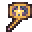
专精工具
鱼竿、捕虫网、锄头、牧场器具、工坊器具和矿灯：在对口场景更强，越用越熟练，每条玩法还有一件传奇工具
专精工具铺 /npcshop tools
在 /npcshop 商业街导览里点第 13 格的「🧰 专精工具铺」，或者直接输入 /npcshop tools。铺子里有 6 个货架（鱼竿、捕虫、农耕、牧场、工坊、挖矿），还能查看 6 件传奇工具的进度并领取。
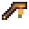
专精工具怎么用
每件工具只在对口的场景更强，换个地方就是普通工具。加成只提高出货的概率和品质，不直接给钱。鱼竿、捕虫网、锄头拿在主手；牧场器具和矿灯放在副手；工坊器具主手或副手都行。
熟练度
在对口场景用一次就记一次熟练度，次数记在工具上，丢了重买就从新手开始。等级越高，专精加成越强；升到大师的工具会发光。
| 等级 | 累计次数 | 专精加成 |
|---|---|---|
| 新手 | 0 | ×1.0 |
| 熟练 | 100 | ×1.15 |
| 精通 | 500 | ×1.3 |
| 大师 | 2000 | ×1.5 |
干活的样子
每件工具都有两张图：平时一张，干活一张。鱼竿和原版一样，甩出去就换成甩杆图。其它工具在加成生效的那一下会换成干活图，持续 1 到 3 秒：网里兜着虫、锄头翻土冒芽、奶桶装满、铃铛摇响、茶壶冒汽、矿灯发亮。传奇工具一直有流光闪过。
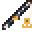
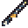
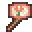
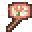
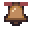
🎣 专精鱼竿
在老渔夫渔具行（/npcshop tackle）里点「专精鱼竿架」买，或者在专精工具铺点鱼竿货架过去。在对口的钓区，对口的鱼咬钩权重 ×1.7。
| 鱼竿 | 价格 | 对口钓区 | 效果 |
|---|---|---|---|
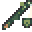 🎋 溪流竹竿 | 280 币 | 河流、森林、沼泽、丛林 | 淡水鱼更爱咬钩，尺寸 +5% |
| ⚓ 远洋海钓竿 | 320 币 | 暖海、海滩、深海 | 海鱼更爱咬钩，尺寸 +5% |
| ❄ 霜雪冰钓竿 | 320 币 | 雪原、冻海、高山天池 | 冷水鱼更爱咬钩，尺寸 +5% |
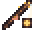 🏮 萤火夜钓竿 | 300 币 | 地下溶洞、暗河 | 洞穴鱼更爱咬钩，夜里钓任何鱼尺寸 +3% |
| 🌸 樱花锦鲤竿 | 300 币 | 樱花林、茶屋主城 | 锦鲤与樱花鱼更爱咬钩，尺寸 +5% |
| ☀ 沙海金竿 | 300 币 | 沙漠绿洲、恶地、草原 | 沙漠鱼更爱咬钩，尺寸 +5% |
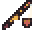 🧲 寻宝磁石竿 | 260 币 | 任意水域的奇物 | 小黄鸭、沉木、珍珠贝等奇物更容易捞到 |
🦋 专精捕虫网
主手拿着捕虫。专精网以樱花丝绸网为底子（稀有虫 +16%、冷却 3.2 秒），在对口场景对口昆虫出现 ×1.8，金星和珍品也更容易出。
| 捕虫网 | 价格 | 对口的虫 |
|---|---|---|
| 🌼 花间纱网 | 2200 币 | 平原草地、樱花林的虫 |
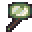 🌳 树冠长柄网 | 2200 币 | 森林、丛林、竹林的虫 |
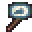 🧭 远行旅人网 | 2400 币 | 沼泽、沙漠、雪原、高山的虫 |
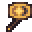 🏮 萤火灯笼网 | 2400 币 | 夜行虫、溶洞虫 |
🌾 专精锄头
主手拿着右键收割成熟作物时生效。
| 锄头 | 价格 | 对口作物 | 效果 |
|---|---|---|---|
| 🌾 田园铜锄 | 900 币 | 原版五谷（小麦/胡萝卜/马铃薯/甜菜/地狱疣） | 品质更高，35% 多收 1 份 |
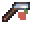 🍓 浆果银锄 | 1200 币 | 可连续采摘的特色作物 | 品质更高、珍品率 +0.6%、20% 多收 1 份 |
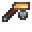 🎃 珍品金锄 | 1500 币 | 一茬一收的大果特色作物 | 品质更高、珍品率 +0.8%、1.5% 长出巨型作物 |
🐮 牧场器具
放在副手，主手喂饲料或空手抚摸对口的动物：喂食产出星级更高、12% 多产 1 份；抚摸好感 +20%。
| 器具 | 价格 | 对口动物 |
|---|---|---|
| 🥛 樱木奶桶 | 800 币 | 奶牛、山羊、哞菇 |
| 🧺 竹编蛋篮 | 800 币 | 小鸡 |
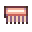 云絮羊毛梳 | 800 币 | 绵羊、羊驼 |
| 🔔 寻香铃铛 | 900 币 | 小猪、蜜蜂 |
🍵 工坊器具
主手或副手拿着，在工坊开工那一刻生效：开工时 18% 升一星（金星升珍品 4%），耗时 -10%。
| 器具 | 价格 | 对口配方 |
|---|---|---|
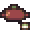 🍵 紫砂茶具 | 1000 币 | 茶饮冲泡 |
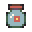 🫙 青瓷酿坛 | 1000 币 | 果酱酿造 |
| 🥐 樱木烘焙模 | 1000 币 | 工坊烘焙 |
⛏ 矿灯
放在副手，主手拿镐挖矿。只对天然矿石生效，自己放下的矿石不算。
| 矿灯 | 价格 | 对口矿石 | 效果 |
|---|---|---|---|
| 💎 宝石矿灯 | 900 币 | 钻石、绿宝石、青金石、红石、石英矿 | 挖对口矿石 12% 多掉 1 个 |
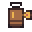 ⚙ 金属矿灯 | 900 币 | 铁、铜、金、煤矿 | 挖对口矿石 15% 多掉 1 个 |
| 🔮 晶洞矿灯 | 1200 币 | 任何天然矿石 | 晶洞掉率 +6%，铱金晶洞 +5% |
传奇工具
传奇工具不卖，完成每条玩法的收集目标后自动送一件，全服播报。上线前就已达成条件的玩家，进服时会自动补发。
| 传奇工具 | 获得条件 | 效果 |
|---|---|---|
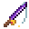 🎣 传奇钓竿 | 钓鱼图鉴集齐 32 种 | 所有钓区都算对口：稀有鱼更爱咬钩、咬钩更快、尺寸更大 |
| 🌌 星河捕梦网 | 昆虫图鉴集齐全部 24 种 | 铱金网底子、冷却 2.2 秒；稀有虫更爱出现，所有虫星级更高 |
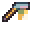 🌈 四季神锄 | 农耕图鉴解锁全部 17 种作物 | 所有作物品质更高；当季特色作物自动专精；10% 丰收涟漪连收周围 8 格 |
| 🎐 牧场主金铃 | 牧场执照升到 3 级，并累计喂食 200 次 | 所有动物产出星级更高、抚摸好感 +20% |
| 🫖 大师茶釜 | 工坊累计收获 50 份金星及以上成品 | 所有配方（含隐藏秘方）开工时 8% 升一星 |
| 🌟 星辉矿工头灯 | 挖矿累计发现 60 个晶洞 | 副手拿着自带夜视；晶洞掉率 +3% |
切换专精
主手拿着传奇工具，Shift + 左键空气，可以在「全能」和这条线的每件专精工具之间切换（四季神锄除外，它会自动跟着季节专精）。切到某件专精时，对口场景的加成约为那件专精工具的八成，再乘熟练度。传奇钓竿也是同样的操作。
传奇工具弄丢了，可以在专精工具铺花 3000 茶屋币补领，熟练度从新手重新开始。背包或末影箱里还有同一件时不能补领。
注意事项
- 牧场器具、工坊器具和矿灯右键不能放到地上。
- 专精工具不能拿去合成，也不能卖给村民，不能放进制图台、织布机和砂轮。
- 专精工具不能用
/sell卖，回收站也不收。